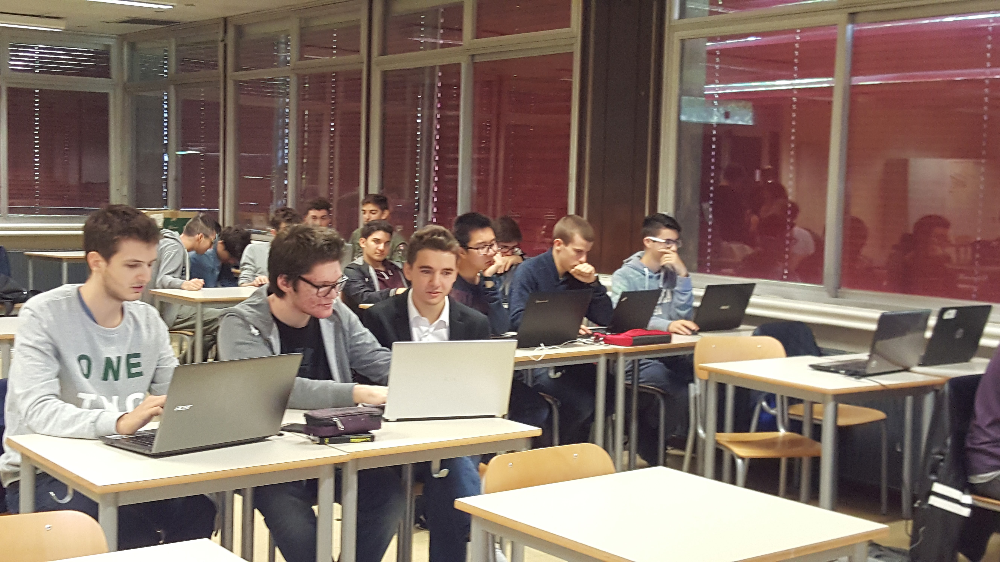

Questo sito portfolio fa parte del mio percorso di Alternanza Scuola Lavoro (ASL) e consiste nel raccogliere tutte le attività che abbiamo svolto durante il quarto anno di scuola superiore.
Premendo su una delle immagini precedenti sarà possibile vedere le diverse attività che l'ASL ci ha permesso di svolgere.
Contattami
Workshop Soft Skill
Cosa abbiamo imparato alla Kohler Engine
Quali sono le soft skill che i datori di lavoro cercano nel personale?
Team Working
Autonomia
Valori
Comunicazione
Problem Solving
Atteggiamento Professionale
Leadership
Resistenza allo stress
Clima aziendale
Flessibilità
Resilienza → Capacità di affrontare e superare le difficoltà
Che cos’è l’atteggiamento?
E’ il modo di Essere, di Pensare, di Comportarsi
TIPI DI ATTEGGIAMENTO:
Positivo/Costruttivo → Tende ad affrontare qualsiasi problema con determinazione ed energia. Solitamente coinvolge chi gli sta intorno (hanno anche usato il termine Resilienza, con cui si intende la capacità di affrontare e superare le difficoltà)
Negativo/Distruttivo → Tende ad infastidire chi gli sta intorno. Carattere aggressivo ed impaziente, spesso finisce con l’infastidire il lavoro degli altri
Neutrale → Non sceglie mai niente e spesso acconsente ad ogni cosa gli venga proposta (sono paragonabili a dei moderni Ignavi danteschi)
Ovviamente l’unico atteggiamento incoraggiato nelle aziende è quello Positivo.
VALORI PROFESSIONALI:
Entusiasmo → Con la parola “Meraki” i greci intendevano il fare qualcosa con tutto se stesso: con passione, creatività ed amore
Determinazione
Spirito di iniziativa → Atteggiamento Positivo
Spirito di adattamento (Rispetto ed Umiltà)
Empatia → Essenziale non solo nel settore commerciale, poiché un’empatia all’interno dell’azienda migliora notevolmente l’ambiente lavorativo.
TRE REGOLE DEL LAVORO SECONDO ALBERT EINSTEIN:
Esci dalla confusione trova la semplicità
Esci dalla discordia trova l’armonia
Nel pieno delle difficoltà risiede l’occasione favorevole.
LE BASI PER UNA BUONA COMUNICAZIONE:
Saper catturare l’attenzione
Saper ascoltare
Tentare di instaurare un legame emotivo
Giocare sulle emozioni di chi ascolta
Mostrare sempre Empatia
Lavorare in gruppo
Consigli utili su come gestirli al meglio
Differenziare i gruppi dagli insiemi di persone
Un gruppo, a differenza di un insieme di persone riesce a comunicare efficacemente e a non intralciarsi. Hanno inoltre un fine ed un motivo comune.
Il concetto di “errore”: la Corresponsabilità
In un gruppo, chi commette l’errore deve essere premiato poiché ha individuato una debolezza all’interno del gruppo.
Con corresponsabilità si intende il fatto che, indifferentemente da chi ha commesso l’errore, la responsabilità cada comunque su tutto il gruppo in modo che l'obiettivo principale di tutti sarà evitare di commetterne di nuovi.
Condivisione degli obiettivi: la meta comune
Un gruppo dimostra di esserlo soprattutto quando si ha un obiettivo unico. La cosa può sembrare banale, ma molti gruppi perdono la loro unità quando l’obiettivo “finale” viene completato. Per questo è importante rinnovare sempre gli obiettivi, in modo da mantenere attivi i benefici dell’agire insieme.
Chi è il capo?
Questo probabilmente è il punto più problematico di tutti. Ovviamente dal punto di vista strettamente burocratico il capo è il Project Manager, ma emotivamente chi è veramente quello che deve prendere le scelte più impegnative?
La risposta ideale (e che purtroppo la maggior parte delle volte rimane tale) dovrebbe essere che tutti sono “il capo”, nel senso che le scelte dovrebbe essere divise in base alle competenze (per esempio l’esperto in marketing risponderà alle domande sulle pubblicità mentre l’ingegnere meccanico si occuperà delle scelte riguardo ai motori).
L’importanza del sense of humor
Saper smorzare la tensione lavorativa con una battuta può sembrare una cosa da poco, ma i dati dicono che risulta fondamentale. Con questo non si intende che bisogna fare trenta battute all’ora e neanche farne quando non è il caso.
Tecnopolo di Reggio Emilia
Tecnopolo
10/10/2016
Visita più specifica alla sede Tecnopolo. Dopo la visita il direttore del Tecnopolo ci ha spiegato nel dettaglio :
-Quali sono le aziende che collaborano con il Tecnopolo e in cosa si specializzano.
-La storia del Tecnopolo, di cosa si occupa e cosa promuove.
Per 3 settimane abbiamo ascoltato delle lezioni tenute da parte del Dott. Maggiali che ci ha parlato in generale delle normative tecniche e delle direttive.
Abbiamo imparato :
- Cosa sono le norme tecniche e chi si occupa di pubblicare queste norme.
- Le differenze fra le diverse norme.
- 3 direttive fondamentali (Bassa tensione,macchine e compatibilità elettromagnetica)
- Chi segue le direttive fuori e dentro l’UE.
- Abbiamo compreso che ogni apparecchio deve essere necessariamente accompagnato da una documentazione che indichi se il componente rispetta le normative o meno. (dichiarazione di conformità)
Isobus
Successivamente ci hanno parlato del mondo degli ISOBUS e delle trattrici e abbiamo imparato:
-Come funziona una trattrice
-Come gli attrezzi comunicano l’uno con l’altro e cosa fa ogni pezzo.
-Le reti di comunicazioni certificate utilizzate per poter far cooperare attrezzo e trattrice.
-Descrizione dello standard ISOBUS nel dettaglio,i suoi vantaggi e svantaggi e i diversi dispositivi che usufruiscono di questo standard.
-Le reti CAN
-come automatizzare una trattrice e poterla programmare
Fab Lab
Per le ultime due giornate abbiamo lavorato presso il FabLab di Reggio Emilia.
L’attività che abbiamo svolto era così strutturata:
-La prima parte riguardava la storia del FabLab
-La seconda parte riguardava la presentazione dell’operato dei collaboratori e delle invenzione che hanno realizzato diverse start up.
-Nella terza parte siamo stati divisi in gruppi e abbiamo realizzato , proprio come fossimo una start up, una nuova invenzione che sarebbe potuta servire nella vita odierna.
Giornata sull'intelligenza digitale
Nella prima ora ci è stato fatto un esempio sull’organizzazione di gruppi di persone da un uomo che da molti anni gestisce l’organizzazione della celeberrima fiera “Lucca Comics&Games”. Ha spiegato i numeri di persone da contattare, come interagire con il comune per ottenere tutti i permessi e altre faccende burocratiche.
Successivamente due ragazzi che gestivano la pagina facebook “Orgoglio Nerd” ci hanno spiegato come sono arrivati alla folle cifra di 300’000 mi piace in circa 4 anni, come comunicare ad un così alto numero di persone e soprattutto come mantenere il successo che si riscuote (spesso, hanno detto, molte pagine non riescono a far rimanere le persone nella pagina per più di una settimana.
Dopodichè ogni classe è stata divisa in due gruppi e ci è stato chiesto di lavorare ad un progetto: ogni gruppo doveva concentrarsi sulla soluzione di una problematica particolare (per esempio al mio gruppo era capitato il tema “le competizioni a scuola ”). Il nostro compito era quello di trovare chi poteva beneficiare del progetto, chi lo avrebbe ostacolato e i vari problemi. C’era anche da indicare chi potrebbe voler collaborare con noi, quali strumenti ci sarebbero serviti e, tempo permettendo, sostenibilità ambientale ed il costo per l’utente.
Alla fine abbiamo presentato a tutti i progetti, e discusso delle scelte degli altri gruppi.
Infine sono stati presentati i risultati del questionario che ci avevano fatto fare due settimane prima. Hanno mostrato le risposte che abbiamo sbagliato di più, le percentuali di successo che ha fatto tutti i partecipanti (relazioni ed informatici) e poi gli ha divisi fra informatici e relazioni, mostrando che abbiamo superato l’altro indirizzo mediamente di quasi 10 punti percentuale. Sono poi stati consegnati i 100€ di buoni sconto amazon ai primi 5 in classifica. Ci hanno poi fatto compilare un questionario online sul nostro indice di gradimento su tutta l’esperienza e consegnato un volantino riguardante le giornate della laicità che includeva una sfida con in palio 500€ di buoni.
Progetto ISIA
Giovedì 27 aprile siamo andati all’ISIA, un Istituto superiore per le industrie artistiche, dove abbiamo collaborato con i grafici nello sviluppare una landing page che convinca gli utenti a visitare la mostra al Palazzo Ducale di Urbino.
Abbiamo avuto due ore per pensare a cosa fare e a progettare e altre due ore per svilupparlo. Il lavoro è stato diviso fra gli indirizzi: i grafici dovevano trovare un possibile layout, rappresentarlo tramite una bozza a matita ed aspettare l'approvazione prima degli informatici (dovevamo capire se fosse fattibile per il tempo a disposizione) e dagli insegnanti dell’ISIA. Dopodichè gli informatici iniziano a sviluppare il codice del programma, e nel nostro caso ad ogni passo lo mostravamo ai grafici per verificare che lo stessimo facendo come lo hanno pensato loro.
Finito il tempo ogni gruppo ha brevemente presentato il proprio progetto.
La nostra pagina comprendeva una breve descrizione del museo, ed alcuni graffiti che saranno presenti alla mostra. Ognuna di queste immagini, quando si posiziona il mouse sopra di esse, viene sostituita da del breve testo con curiosità riguardo ai graffiti o alla mostra.in fondo alla pagina abbiamo anche inserito un Iframe di maps indicante la locazione della mostra e a piè di pagina abbiamo anche inserito il logo dell’ISIA, come richiesto dal personale.
I ragazzi dell’informatico hanno partecipato ad un progetto mosso dal comune di Reggio Emilia chiamato “Nonno bit e Nonna byte”. Il progetto è stato il nostro primo prototipo di alternanza scuola-lavoro e consisteva nell’insegnare a persone anziane, che non sono quindi native digitali, ad utilizzare il personal computer.
Ancor prima dell’attività vera e propria i ragazzi si sono cimentati nella creazione di un vero e proprio manuale per i signori e le signore che vi partecipavano.
Durante le giornate dovevamo accogliere gli anziani e condurli verso i rispettivi laboratori e dalle 14:30 alle 16:30 l’attività iniziava. Ogni ragazzo (l’insegnante) era affiancato da due anziani(gli studenti) e si seguiva il manuale passo per passo. Se peró le lezioni risultavano chiare e gli argomenti del manuale erano stati chiariti, si poteva passare ad insegnamenti maggiori, quali come inviare una mail oppure come fare acquisti online e quant’altro. All’inizio di ogni giornata bisognava far firmare il foglio delle presenze ad ogni persona presente in aula.
Al termine di questa avventura, abbiamo rilasciato un attestato di partecipazione a tutti i signori e le signore e abbiamo fatto compilare un questionario per comprendere se avevano appreso a pieno le cose insegnate.
Grazie a questa attività abbiamo potuto regalare tanti sorrisi e informazioni a coloro che per ovvie ragioni, non hanno potuto accedere a questo mondo digitale. Abbiamo inoltre appreso come si insegna ad una persona e come bisogna relazionarsi con persone di una certa età.
Incontro con confindustria
Lunedì 11 dicembre sono venuti
Prima c'erano centri di collocamento, ora centri per l'impiego. Gestiscono anagrafica operatori e disponibilità ad accettare offerta di lavoro. Svolgono attività di orientamento.
Rapporti di lavoro:
subordinato
para-subordinato
autonomo
Subordinato --> lavoratore svolge lavoro alle dipendenze dell'imprenditore. Mette a disposizione tempo e lavoro in cambio di retribuzione.
Categorie lavoratori:
dirigenti;
quadri;
impiegati;
operai;
intermedi.
Cause licenziamento:
Giusta causa: comportamento grave del lavoratore. Gli fa perdere la fiducia datagli dal datore -> licenziamento in tronco.
Giustificato motivo soggettivo: evento causato dal lavoratore.
Giustificato motivo oggettivo: quando non c'è più necessità che persona svolga quel lavoro.
Contratto a tempo indeterminato --> Col Jobs Act vengono aggiunti a esso tutele crescenti. Si applica a tutti i lavoratori assunti a tempo indeterminato a partire da Marzo 2015. Articolo 18: se licenziamento illegittimo, lavoratore richiede di poter riavere il posto.
Contratto individuale di lavoro --> Può concludersi oralmente sia in forma scritta. Azienda è tenuta a informare lavoratore in merito al contenuto del contratto individuale.
Contratto a tempo determinato --> Risponde alle esigenze dell’impresa. Dev'essere scritto, ha una scadenza precisa. Non può durare più di 36 mesi, compresa proroga. In caso di rinnovo ci dev'essere uno stacco dal contratto nuovo a quello precedente, almeno 10 giorni. Non possono essere licenziati prima della scadenza a meno che non avvenga 'giusta causa'
Part-time
Orario di lavoro inferiore al full-time.
orizzontale: lavorare tutti i giorni ma meno ore
verticale: lavoro solo alcuni giorni per tutte le ore
misto: un insieme dei due precedenti.
Trattamento economico in base alle ore
Apprendistato
Favorisce giovani tra 15 e 29 anni. Datore di lavoro fornisce anche una formazione per acquisire competenze professionali.
Datore ha agevolazioni normative, contributive ed economiche.
3 topologie:
- per qualifica e diploma
- apprendistato professionalizzante (più diffuso), da 6 mesi a 3 anni.
- Alta formazione e ricerca. Consente di conseguire laurea/titolo ad alta formazione/dottorato.
Lavoro somministrato --> Ex interinale, impresa chiede manodopera ad agenzie autorizzate iscritte a albo tenuto presso il ministero del lavoro e Delle politiche sociali.
Lavoro intermittente --> Lavoratore a disposizione del datore di lavoro che ne usa prestazione lavorativa con alcuni limiti e modalità.
Discontinuità, lavori solo sotto richiesta (età<24 || età>55).
Lavoro autonomo -->Autonomia, risultato e irrilevanza del tempo dedicato, il lavoratore decide quando lavorare e come. È pagato a lavoro, non a tempo.
Lavoro parasubordinato--> Autonomia, coordinamento, risultato e irrilevanza del tempo dedicato
Prestazioni occasionali:
Non può superare reddito annuale di 5.000
Tirocinio:
Indennità min di 450 euro. I tirocini sono regolati da apposite convenzioni. Dev'essere impiegato in qualcosa dove è implicato il suo percorso di studi. È equiparato ai lavoratori per la formazione sulla sicurezza nell'ambiente di lavoro.
NASpl
Se retribuzione media mensile è <= 1.195 e indennità pari a 75% dell'importo.
Non può aumentare i tetto mensile di 1300 euro che viene rivalutato ogni anno.
Colloquio:
Aziende prevedono vari step. Alcune fanno degli step psico attitudinali. Il colloquio avviene con l'addetto alle risorse umane di solito. Cercano di capire le competenze professionali ma anche i caratteriali. Domande per capire chi si ha di fronte.
Incontro con responsabile.
Valutazione dei profili incontrati e comunicazione candidati esito colloquio.
Corso Angular con Errevi
Durante le mattinate svolte con Errevi abbiamo svolto un corso di AngularJS, un fremework JavaScript per lo sviluppo web fatto dalla GOOGLE.
Nella prima mattinata c'è stata l'introduzione al framework, con quattro esercizi. Sebbene gli esercizi fossero semplici, per quanto mi riguarda, ho trovato grande difficoltà a capire il funzionamento dell'ambiente di lavoro perchè nonostante facesse le stesse cose che fa JavaScript con AngularJS sembravano scritte molto più difficili.
Infatti le informazioni che ci sono state date dall'azienda erano fin troppe e hanno creato molta confusione.
Le slides non sembravano fatte affatto per ragazzi inesperti, al contrario sempbravano fatte per persone che lavoravano quotidianamente con quel framework.
Nonostante tutto dovevamo consegnare per l'ultimo giorno un progetto. Questo progetto consisteva nel gestire le partite e una squadra di basket.Io ho lavorato con Federico Caraffi e questo è il nostro lavoro che non è stato completato

Alla fine delle lezioni siamo stati valutati dall'azienda in base al lavoro che abbiamo fatto